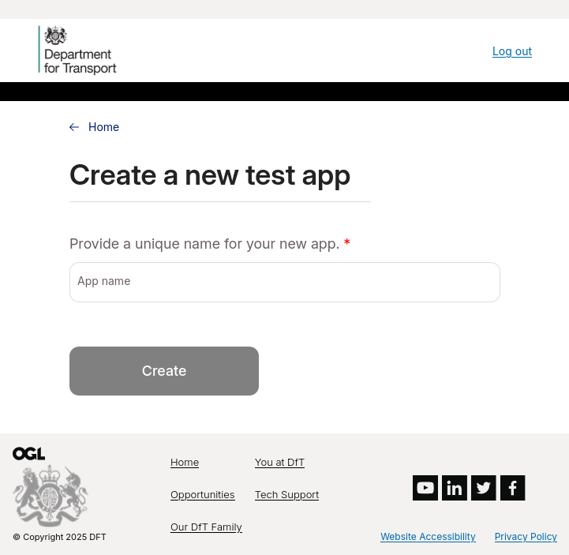
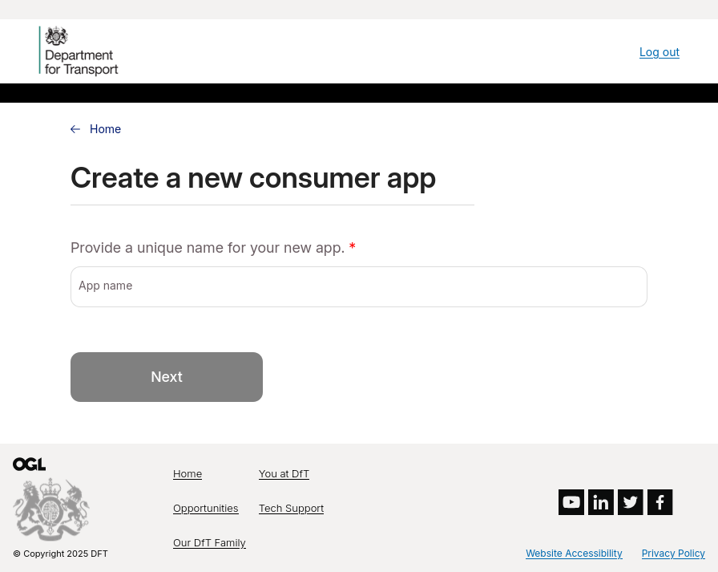

Creating Applications¶
Creating a publisher application in integration¶
Note
This functionality is only available for publisher accounts. Consumer accounts are unable to create publisher applications.
When creating a publisher application in integration, the only required information is application name.
{kind=link}
If you application name violates the name requirements or constraints, you will receive a validation message communicating this. See the bototm of this page for information on what constitues a valid application name.
Upon successful creation of your application, you will be redirected to the application details screen, which displayes your created application, including:
Application ID
TRA code (this is a test code generated for use in the integration environment, and does not correspond to a real Traffic Regulation Authority)
API key
API secret
{kind=link}
Note
Once created, publisher applications enter a pending state. Your application will be reviewed by a Central Service Operator, and you will receive an email once approved. You may receive an email requesting more information if required to support the application review process.
Creating a publisher application in production¶
Production publisher applications require the following information:
Application name
The Traffic Regulation Authority the D-TROs will will be submitted on behalf of
Confirmation of whether you are a Digital Service Provider or self-publishing Traffic Regulation Authority
Acceptance of the terms and conditions
{kind=link}
Upon successful application creation, you will be atomatically redirected to the application details screen.
Creating consumer applications in integration¶
Note
Both publisher and consumer accounts can create consumer applications.
When creating a consumer account in the integration environment, an application name is again required.
{kind=link}
Additionally, Department for Transport also collect information on the proposed usage of consumer applications. This information is not shared, and is used solely for understanding the types of activities consumers are using the data for, and helping to guide future development of the service. These fields include, but are not limited to, the regions of the country and types of data you are interested in.
{kind=link}
Creating consumer applications in production¶
The process for creating a consumner account in production is identical to that of creating a consumer account in integration. Please see section Creating consumer applications in integration for more details.
Note
Consumer applications do not require apporoval from a Central Service Operator, and so can be used with the D-TRO service immediately after they are created.
Application name requirements
For an application name to be valid, all of the following must be true:
The name must be unique across all applications
The name must start with an alphanumeric character
The name can contain only alphanumeric characters, the symbols
_-.#$%, and spaces